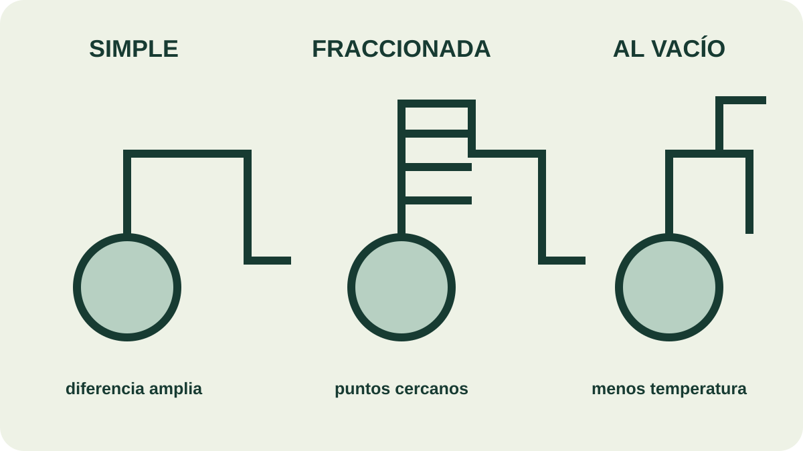

Módulo 17 · 25 minutos
Vapor, vacío y fraccionamiento: elegir la destilación
Al terminar, vas a poder elegir un tipo de destilación y justificarlo por la mezcla y la temperatura de trabajo.
Aparatos parecidos, decisiones distintas
Cuatro montajes pueden compartir balón, termómetro y refrigerante, y sin embargo resolver problemas diferentes. La diferencia decisiva no está en su silueta, sino en qué se separa, cuánto difieren los puntos de ebullición y cuánto calor soporta el material.
Arrastre de vapor: el camino de las esencias
La destilación por es uno de los procesos principales para obtener aceites esenciales. Separa sustancias insolubles en agua y ligeramente volátiles de productos no volátiles.
En un sistema de dos fases inmiscibles, cada líquido ejerce su propia presión de vapor. La suma alcanza la presión de operación antes de que el compuesto orgánico llegue solo a su punto de ebullición. Así puede destilar por debajo de 100 °C y reducir el riesgo de deterioro térmico.
Simple: cuando la diferencia es amplia
En la destilación simple, el vapor va directamente al condensador. Es apropiada para separar un líquido de sólidos no volátiles o líquidos con puntos de ebullición muy distantes. El material indica diferencias de más de 30 °C como orientación general y, para separaciones más claras, intervalos de 60 a 80 °C.
El destilado no es necesariamente puro. Si la distancia entre puntos es menor, se pueden repetir destilaciones simples: cada pasada enriquece una fracción en el componente más volátil.
Fraccionada: muchas separaciones en una
La destilación fraccionada incorpora una . El vapor asciende y el condensado desciende. En cada intercambio, el nuevo vapor se enriquece en el componente más volátil, el de menor punto de ebullición.
A lo largo de la columna aparece un gradiente de temperatura. En vez de repetir montajes completos, la columna realiza una serie de pequeñas separaciones continuas dentro de una sola operación.
Al vacío: hervir con menos calor
La destilación al vacío conecta el montaje a una bomba o trompa de agua. La presión menor permite que los líquidos hiervan a temperaturas más bajas. En lugar de plato poroso puede utilizarse un capilar que mantenga la ebullición homogénea.
Este método busca evitar la . No se elige porque el vacío sea más sofisticado, sino porque el compuesto necesita una temperatura de trabajo menor.

Encontrá la pieza que decide
Compará los tres montajes. ¿Cuál agrega una columna entre el balón y el cabezal? ¿Cuál incorpora una conexión a vacío? Explicá por qué esas piezas cambian el proceso aunque el condensador se mantenga.
Las tres preguntas de elección
Primero: ¿el material aromático es insoluble en agua y puede viajar con su vapor? Segundo: ¿qué diferencia existe entre los puntos de ebullición? Tercero: ¿cuánto calor tolera el compuesto sin degradarse?
Arrastre de vapor para la fracción aromática inmiscible; simple para diferencias amplias o sólidos no volátiles; fraccionada cuando los puntos están cercanos; vacío cuando la temperatura necesaria amenazaría el material. Elegir el método es transformar datos en una decisión justificada.
Actividad · Tres casos
- Un compuesto aromático insoluble en agua y sensible al calor. 2. Dos líquidos con 75 °C de diferencia. 3. Dos líquidos con puntos cercanos que deben enriquecerse. Elegí método, nombrá la pieza distintiva y justificá cada caso en una frase.
No todas las flores aceptan este viaje
El vapor resuelve gran parte del oficio, pero hay materiales que no liberan su aroma o lo entregan deteriorado. Entonces cambia el intermediario: disolventes, grasas, presión o un fluido supercrítico.
Guardá esta estación
Cuando puedas explicar la idea central con tus propias palabras, marcá el módulo como completado.